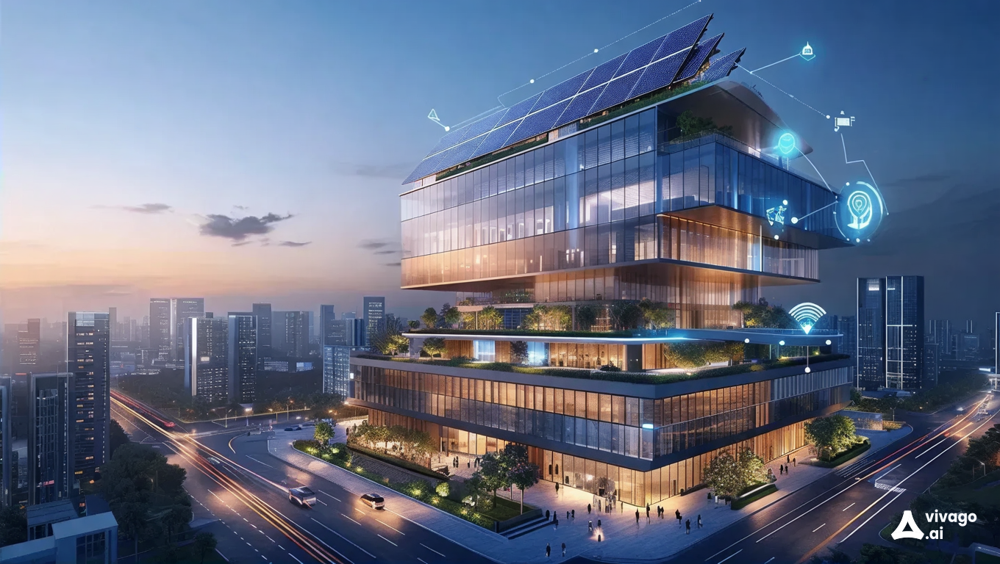

What is Building Automation?

Building automation involves the automatic centralized control of a building's systems such as heating, ventilation, air conditioning, lighting, and security. Utilizing sensors, software, and IoT technology, building automation systems (BAS) enhance comfort, safety, and efficiency while reducing energy consumption and operational costs.
Importance of Building Automation
Implementing building automation is essential for various reasons:
- Energy Efficiency: Reduces energy usage by optimizing heating, cooling, and lighting based on occupancy and environmental conditions.
- Enhanced Comfort: Maintains optimal indoor conditions automatically, improving occupant comfort.
- Cost Savings: Lowers utility and maintenance costs through efficient resource management and predictive maintenance.
Uses of Building Automation
Building automation can be applied in various ways, including:
- Climate Control: Automatically adjusting temperature and humidity for efficient HVAC operations.
- Lighting Control: Turning lights on and off or dimming them based on occupancy or daylight availability.
- Security Systems: Monitoring and controlling access to ensure building security.
- Energy Monitoring: Tracking energy use and optimizing it to reduce waste.
Benefits of Building Automation
Adopting building automation systems offers numerous advantages:
- Reduced Operating Costs: Lower energy and maintenance expenses due to automated efficiency.
- Improved Sustainability: Minimizes the environmental impact through smarter energy use.
- Enhanced Safety: Integrates fire, gas leak detection, and security systems for better protection.
- Data-Driven Management: Access to real-time data for more informed decision-making.
Contact Us
If you would like to learn more about building automation or have questions, please reach out to us:
Email: ecoitsolutions786@example.com
Phone: 9390455709
Our team is here to help you implement effective building automation solutions that enhance efficiency, security, and comfort.